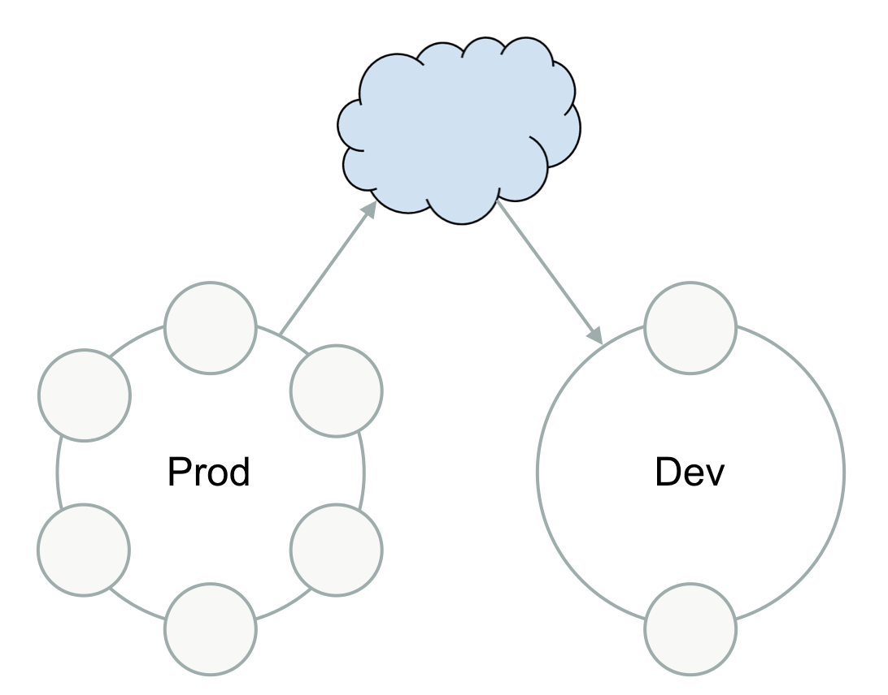

$ nodetool setlogginglevel org.apache.cassandra.service.StorageProxy DEBUGTuning Cassandra for Performance
cassandra.yaml configuration file
The main configuration file for Cassandra
Located in the following directories:
- Cassandra package installations: /etc/cassandra
- Cassandra tarball installations: install_location/conf
- Remember, must restart the node for the changes to take effect! This is not an online change.
Quick Start
Minimal properties needed for configuring a cluster
- cluster_name (Default: Test Cluster)
- listen_address (Default: localhost)
- listen_interface (Default: eth0)
- listen_interface_prefer_ipv6 (Default: false)
More Advanced Settings
There are other pieces of the cassandra.yaml file for more control
- Storage options
- Communications
- Internal node configuration (like threads)
- Security
Storage Options
hinted_handoff_enabled
- hinted handoff is performed when set to true
max_hint_window_in_ms
- this defines the maximum amount of time a dead host will have hints generated
data_file_directories
- the location of data files
commitlog_directory
- the location of the commit log directory
row_cache_size_in_mb
- Maximum size of the row cache in memory
Communications
partitioner
- responsible for distributing groups of rows (by partition key) across nodes in the cluster
storage_port
- TCP port, for commands and data
broadcast_address
- Address to broadcast to other Cassandra nodes
Internal Node Configurations
concurrent_reads/concurrent_writes
- Number of reads/writes permitted to occur concurrently
file_cache_size_in_mb
- Maximum memory to use for pooling sstable buffers
memtable_heap_space_in_mb/memtable_offheap_space_in_mb
- Total on heap and off allowance for memtables
Security
authorizer
- The authentication backend. It implements IAuthenticator for identifying users
internode_authenticator
- used to allow/disallow connections from peer nodes
System & Output Logs
- Simple Logging Facade for Java (SLF4J)
- a logback backend
- Logs are written to the system.log and debug.login (in logs directory)
- Configure logging programmatically or manually.
Manual ways to configure logging
- Run the nodetool setlogginglevel command.
- Configure the logback-test.xml or logback.xml file installed with Cassandra.
- Use the JConsole tool to configure logging through JMX.
nodetool setlogginglevel
- Used to set logging level for a service
- Can be used instead of modifying the logback.xml file (in the conf directory)
- no the need for a restart
- Example
nodetool getlogginglevels
- Used to get the current runtime logging levels
- Example
$ nodetool getlogginglevels
Logger Name Log Level
ROOT INFO
com.thinkaurelius.thrift ERROR
org.apache.cassandra DEBUGlogback.xml
- Contains appenders specifying where to print the log and its configuration.
- This first appender directs logs to a file.
<appender name="FILE" class="ch.qos.logback.core.rolling.RollingFileAppender">
<file>${cassandra.logdir}/system.log</file>
<rollingPolicy class="ch.qos.logback.core.rolling.FixedWindowRollingPolicy">
<fileNamePattern>${cassandra.logdir}/system.log.%i.zip</fileNamePattern>
<minIndex>1</minIndex>
<maxIndex>20</maxIndex>
</rollingPolicy>
<triggeringPolicy class="ch.qos.logback.core.rolling.SizeBasedTriggeringPolicy">
<maxFileSize>20MB</maxFileSize>
</triggeringPolicy>
<encoder>
<pattern>%-5level [%thread] %date{ISO8601} %F:%L - %msg%n</pattern>
</encoder>
</appender>- The second appender directs logs to the console.
<appender name="STDOUT" class="ch.qos.logback.core.ConsoleAppender">
<encoder>
<pattern>%-5level %date{HH:mm:ss,SSS} %msg%n</pattern>
</encoder>
</appender>You can change the following logging functionality:
- Rolling policy
The policy for rolling logs over to an archive
- Location and name of the log file
- Location and name of the archive
- Minimum and maximum file size to trigger rolling
- Format of the message
- The log level
Possible log levels:
- ALL
- TRACE
- DEBUG
- INFO (Default)
- WARN
- ERROR
- OFF
GC logging
Why is it important?
- The GC log is a very important tool for revealing potential improvements to the GC configuration and heap
- It provides exact data about its results and duration foreach GC happening
- Useful flags:
-XX:+PrintGC --Simple, prints a line for every young generation GC and every full GC
-XX:+PrintGCDetails --Detailed, young generation as well as old and perm gen
-XX:+PrintGCTimeStamps and -XX:+PrintGCDateStamps --Adds time and date information to a simple or detailed GC log
Exercise --System and Output Logs
Exercise 6—System and Output Logs
nodetool
This is how you will be managing your individual nodes.
- A command-line interface for monitoring Cassandra.
- Also used for performing routine database operations.
- Included in the Cassandra distribution.
- Run directly from an operational Cassandra node.
How does it work?
- JMX command line wrapper
- communicates with JMX to perform operational and monitoring tasks exposed by MBeans.
- JMX is a Java technology that supplies tools for managing and monitoring Java applications and services.
The nodetool commands can be broken up into these groups:
- Cluster
- Server
- Backup
- Storage
- Compaction
- Network
Types of commands: Cluster
- This has to do with working with the cluster-wide information
- as the point-of-view of that node as it sees the state of the cluster
nodetool status
- Provides information about the cluster, such as the state, load, and IDs
- Who’s up and who’s down
- This is probably the most used nodetool command
nodetool <options> status <keyspace>nodetool status
nodetool repair
- Starts a repair process from the point of view of that node
- Repairs one or more tables
- Covered in depth in a different module
nodetool <options> repairTypes of commands: Server
nodetool info
- Provides node information, such as load and uptime
- the status of the JVM
- Use the "T" flag to display all tokens
nodetool <options> info ( -T | --tokens )- Use nodetool info to print out node information, including load and uptime.
- Use the "T" flag to display all tokens
nodetool info
nodetool tpstats
- Provides usage statistics of thread pools
- How many completed, how many pending, which ones are blocked
- A high number of pending tasks for any pool can indicate performance problems
- Shows mutation drops (critical for troubleshooting a node)
- A heavily used command during trouble shooting
nodetool <options> tpstats- Run the nodetool tpstats command on the local node.
- The nodetool tpstats command provides statistics about the number of active, pending, and completed tasks for each stage of Cassandra operations by thread pool.
- A high number of pending tasks for any pool can indicate performance problems
nodetool tablehistograms
- The nodetool tablehistograms command provides statistics about a table.
- Includes read/write latency, partition size, column count, and number of SSTables.
- The report is incremental, not cumulative.
- It covers all operations since the last time nodetool tablehistograms was run in the current session.
- The use of the metrics-core library makes the output more informative and easier to understand.
- These statistics could be used to plot a frequency function.
nodetool <options> tablehistograms -- <keyspace>.<table>nodetool tablehistograms
- The output shows the percentile rank of read and write latency values, the partition size, and the cell count for the table.
Types of commands: Backup
nodetool snapshot
- Take a snapshot of one or more keyspaces, or of a table, to backup data.
- Cassandra flushes the node before taking a snapshot, takes the snapshot, and stores the data in the snapshots directoryof each keyspace in the data directory.
- If you do not specify the name of a snapshot directory using the -t option, Cassandra names the directory using the timestamp of the snapshot, for example 1391460334889.
- Covered in a different module.
$ nodetool <options> snapshotnodetool snapshot
Example: All keyspaces
$ nodetool snapshot- The following message appears:
Requested creating snapshot(s) for [all keyspaces] with snapshot name [1391464041163]
Snapshot directory: 1391464041163- Because you did not specify a snapshot name, Cassandra names snapshot directories using the timestamp of the snapshot.
- If the keyspace contains no data, empty directories are not created.
nodetool snapshot
Example: Single keyspace snapshot
- Assuming you created the keyspace cycling, took a snapshot of the keyspace and named the snapshot 2015.07.17.:
$ nodetool snapshot -t 2016.05.17 killrvideo- The following output appears:
Requested creating snapshot(s) for [killrvideo] with snapshot name [2016.05.17]
Snapshot directory: 2016.05.17- Assuming the killrvideo keyspace contains two tables, users and tags, taking a snapshot of the keyspace creates multiple snapshot directories named 2016.05.17.
- A number of .db files containing the data are located in these directories.
- For example, from the installation directory:
$ cd data/data/killrvideo/users-a882dca02aaf11e58c7b8b496c707234/snapshots/2016.05.17
$ ls- We would see the following:
la-1-big-CompressionInfo.db la-1-big-Index.db la-1-big-TOC.txt
la-1-big-Data.db la-1-big-Statistics.db la-1-big-Digest.adler32
la-1-big-Filter.db la-1-big-Summary.db manifest.json$ cd data/data/killrvideo/tags-a882dca02aaf11e58c7b8b496c707234/snapshots/2015.07.17
$ ls- We would see the following:
la-1-big-CompressionInfo.db la-1-big-Index.db la-1-big-TOC.txt
la-1-big-Data.db la-1-big-Statistics.db la-1-big-Digest.adler32
la-1-big-Filter.db la-1-big-Summary.db manifest.jsonnodetool snapshot
Example: Multiple keyspaces snapshot
- Assuming you created a keyspace named mykeyspace in addition to the killrvideo keyspace, take a snapshot of both keyspaces.
$ nodetool snapshot mykeyspace killrvideo- The following message appears:
Requested creating snapshot(s) for [mykeyspace, killrvideo] with snapshot name [1391460334889]
Snapshot directory: 1391460334889nodetool snapshot
Example: Single table snapshot
- Take a snapshot of only the users table in the killrvideo keyspace.
$ nodetool snapshot --table users killrvideo- The following message appears:
Requested creating snapshot(s) for [cycling] with snapshot name [1391461910600]
Snapshot directory: 1391461910600- Cassandra creates the snapshot directory named 1391461910600 that contains the backup data of cyclist_name table in data/data/cycling/cyclist_name-a882dca02aaf11e58c7b8b496c707234/snapshots, for example.
nodetool snapshot
Example: List of different keyspace.tables snapshot
- Take a snapshot of several tables in different keyspaces, such as users table in the killrvideo keyspace and the sample_times table in the test keyspace. The keyspace.table list should be comma-delimited with no spaces.
$ nodetool snapshot -kt cycling.cyclist_name,test.sample_times- The following message appears:
Requested creating snapshot(s) for [killrvideo.users,test.sample_times] with snapshot name [1431045288401]
Snapshot directory: 1431045288401nodetool clearsnapshot
- Removes one or more snapshots.
- Covered in a different module.
$ nodetool <options> clearsnapshot -t <snapshot> -- ( <keyspace> ... )Types of commands: Storage
nodetool cleanup
- Covered in a different module
- Used to get rid of old data on nodes after bootstrap operations
- Deletes snapshots in one or more keyspaces. To remove all snapshots, omit the snapshot name
- Not specifying a snapshot name removes all snapshots
$ nodetool <options> clearsnapshot -t <snapshot> -- ( <keyspace> ... )- To clear snapshots on all nodes at once, use a parallel ssh utility
nodetool flush
- This command flushes everything in the memtables out to SSTables and deletes all commit log segments
- You can specify a keyspace followed by one or more tables that you want to flush from the memtable to SSTables on disk
Types of commands: Compaction
nodetool compact
- Forces a major compaction on one or more tables for size-tiered compaction
- WARNING Don’t do that!!
- Acts differently for different compaction strategies
nodetool <options> compact <keyspace> ( <table> ... )- nodetool compact forces a major compaction on one or more tables
- keyspace is the name of the keyspace and table is one or more table names, separated by a space
Major compactions may behave differently depending which compaction strategy is used for the affected tables:
- WARNING This will knock out your disk if you’re not careful
Size-tiered compaction (STCS) splits repaired and unrepaired data into separate pools for separate compactions
- A major compaction generates two SSTables, one for each pool of data
Leveled compaction (LCS) performs size-tiered compaction on unrepaired data
- After repair completes, Cassandra moves data from the set of unrepaired SSTables to L0
Date-tiered (DTCS) splits repaired and unrepaired data into separate pools for separate compactions
- A major compaction generates two SSTables, one for each pool of data
nodetool compactionstats
- Provide statistics about a compaction
- Not something you would just run all the time
- This is a JMX statistic you could also pull in using OpsCenter
- See what is currently compacting; what files
nodetool <options> compactionstats -H- H converts bytes to a human readable form: KB, MB, GB, or TB
- nodetool compactionstats provides statistics about compaction
- H converts bytes to a human readable form: kilobytes (KB), megabytes (MB), gigabytes (GB), or terabytes (TB).
- Here’s the kind of output you should get from running nodetool compactionstats
- The system log lists the names of the SSTables compacted.
- The total column shows the total number of uncompressed bytes of SSTables being compacted.
Types of commands: Network
nodetool proxyhistograms
- Provides a histogram of network statistics.
- The output of this command shows the full request latency recorded by the coordinator.
- includes the percentile rank of read and write latency values for inter-node communication.
- Typically, you use the command to see if requests encounter a slow node.
nodetool proxyhistograms
nodetool netstats
- Provides network information about the host.
- The default host is the connected host if the user does not include a host name or IP address in the command.
The output includes the following information:
- JVM settings
- Mode: The operational mode of the node: JOINING, LEAVING, NORMAL, DECOMMISSIONED, CLIENT
- Read repair statistics
- Attempted: The number of successfully completed read repair operations
- Mismatch (blocking): The number of read repair operations since server restart that blocked a query
- Mismatch (background): The number of read repair operations since server restart performed in the background
- Pool name: Information about client read and write requests by thread pool.
- Active, pending, and completed number of commands and responses
Get the network information for a node 10.171.147.128:
$ nodetool -h 10.171.147.128 netstatsThe output is:
Exercise --nodetool
Exercise 7—Nodetool
OpsCenter
DSE Management Services

- Performance Service
- Backup & Restore Service
- Repair Service
- Best Practices Service
Lets talk about 4 specific management services that exists within Opsc.. Available in DSE Perf- Troubleshoot faster even for novice new DBAs Backup and Restore- Enterprise requirement. Repairs- ensures cluster performs smoothly. BPS- Rules based on our Subject matter expertise……helps you know what you MUST fix.
Key Capabilities
Visual Monitoring and Management
- Control automatic management services including transparent repair
- Manage and schedule backup and restore operations
- Perform capacity planning with historical trend analysis and forecasting capabilities
- Proactively manage all clusters with threshold and timing-based alerts
- Visually create new clusters with a few mouse clicks either on premise or in the cloud
- Built-in Automatic Failover
Architecture
- web appication deployed on premise; load from anywhere
- agent runs on each node & agents connect to central opscenter process
- agent communicates with local node
- backup instance of opscenterd
- built-in or LDAP authentication supported
- encryption supported on all communication channels
- manage multiple clusters
Performance Service - Overview
- Collects key performance metrics to quickly troubleshoot a database cluster’s performance
- Analyzes Query, Table & Cluster specific metrics
- Correlates different metrics and provides custom recommendations to address specific issues
- Eliminates the need for custom scripting and scheduling to detect problem nodes
Historical metrics, DSE perf objects, Recommendation and Alerts.
Performance Service - Slow Queries
- Identify Slow Queries
- Custom recommendations
- Display contextual alerts
- Visual Query tracing
Performance Service - Table Stats
- Diagnose Table performance
- Custom recommendations
- Cluster level & node drill down
Performance Service - ThreadPool Stats
- Investigate Thread Pools metrics
- Historical Tracking
- Eliminates custom scripts
Backup Service - Visual Backup Management
- Automatic replication doesn’t preclude backups
- Backup & Restore on distributed systems is hard
- Enterprise-class visual backup service guards against data loss on managed database clusters.
- Removes need for building custom scripts and tools.
- First thought that comes to your mind- Why should I take backups/ Doesn’t Replication take of it? Replication does not mean that you should not take backups.
- Take backups data corruption , data loss ( replication of disaster recovery) ( Sstables are immutable- snapshots takes hard links to sstables)
- OpsCenter Backup services supports a wide range of functionality from adhoc snapshot backups, scheduled backups, Commitlog backups for PIT etc.,
- Mike will explain you all the capabilities that we provide later, but you have to understand that if you don’t script correctly, you are going to be in a spot of bother.
Backup Service - Scheduled Backups
- User-configurable
- Sync across cluster
- Automatic cleanup
- Activity Reporting
User configurable recurring schedules
- Multiple schedules
On Server backups use c* snapshot, which uses hardlinks
- Fast, doesn’t use disk space initially
- Automatic cleanup via retention policy
Detailed activity reporting
- Alerts on ERROR
- Details all the way down to sstable level
Backup Service - Remote Backups
- Store backups in AWS S3
- Optimized storage
- Automatic Cleanup
- Future Support
- Automatically send backups to S3
- Upload directly from nodes
Never upload the same sstable twice
- Immutable files
Intelligent automatic cleanup
- Handles optimized storage
Future
- NFS, Generic S3 API, Other cloud providers
Backup Service - Restore

- Coordinated Restore
- Different Topologies
- Cloning
- PIT Restore
restore
- fix data with truncate
- restore missing data-
- handle c* internal sstable formats
different topologies
- move/remove/add node
- clone
- PIT Restore - commitlog archiving & second granularity
Visual Repair Service
- Automatically maintains data consistency across a cluster without impacting performance
- Ensures that your cluster operates efficiently by optimally running repairs
The term “Repair” is overloaded. Think of Repairs as synchronizing replicas. Synchronization is a hard problem to solve. Repair is how C* solves this.
There are couple of ways automatically/dynamically perform repairs e.g read repairs. * where one needs to manually perform repairs.
OpsCenter Repair mechanism simplifies this for you.
node’s data can become inconsistent. node goes down need to bring it up. > max_hint_window. use repair to resynchronize it repairs need to be run before gc_grace_seconds to ensure that deleted data is not resurrected.
Repair Service - Under the Hood
- Repair within X days
- Continuous Repairs
- One repair per replica set
- Parallel repairs
- vnodes
- repair time window - related to gc_grace
- Repairing an entire node is expensive.
- describe algorithm
- repair service continuously runs
two goals:
- repair data, don’t affect performance
- only 1 repair per replica set
- vnodes
- Incremental Repairs- mention.
Best Practice Service
Benefits
- Periodically scans database clusters and automatically detects issues that threaten a cluster’s security, availability, and performance
- Utilizes a set of expert rules that span a variety of different categories and summarizes the results
Under the Hood
- OpsCenter Server orchestrates the Best Practice service to ensure relevant best practice alerts are displayed
- OpsCenter Server either directly interacts with Cassandra or through OpsCenter Agents to get results
- OpsCenter Server polls, aggregates and sends the results to OpsCenter UI for visualization/end user consumption
Conclusion - OpsCenter Management Services
- Obviate error-prone, manual-based maintenance processes and help automate the protection of critical data
- Eliminate the need for custom tooling and development
- Help novice DBAs and operations personnel manage DSE Cassandra like seasoned professionals
Exercise --Opscenter
Exercise 8—OpsCenter
JMX
- Java Management Extensions
- very complicated
- Resources represented as objects with attributes and operations
- Cassandra (as well as other applications) uses it extensively for monitoring and user input.
- The gateway to metrics (but requires Java to access).
- Can use other things to access but still need Java wrapper.
- Been known for having memory leaks
There are a lot of ways to access JMX
Visual
- jconsole
- visualvm
Command Line
- jmxterm
- jxmsh
- MX4J
- Jolokia
JMX has MBeans
- [domain]:[key]=[value],[key2]=[value2]…
- Have a domain and a series of key value attributes.
- Attributes narrow down what the bean is for
org.apache.cassandra.metrics
- "metrics" domain contains all of the metrics you need.
org.apache.cassandra.metrics :type=
- Cache
- Client
- ClientRequest
- ClientRequestMetrics
- ColumnFamily
- CommitLog
- Compaction
- DroppedMessage
- FileCache
- Keyspace
- Storage
- ThreadPools
Leveled Compaction
Leveled Compaction
The Algorithm
Leveled compaction assigns each SSTable a level. A partition will only exist in one SSTable per level.
Animation 1: Here’s our first SSTable flushed to disk. It has five partitions, each identified by their token key.
Animation 2: Since this is a newly flushed SSTable, size tiered compaction considers this SSTable to be in level zero. Generally any table residing in level zero immediately compacts to lower levels. Since there are no other SSTables to compact with, this table remains in L0 for the time being.
Animation 3: Here’s a second flushed SSTable. Leveled compaction will now compact the two L0 SSTables together.
Animation 4: Leveled compaction always compacts down to the level immediately below the current one. In this case, that’s level 1 (L1).
Animation 5: As with all compaction, we combine partitions together from the two source SSTables into a new SSTable. In these illustrations, we are assuming no updates/deletes, hence our new partitions sizes will be the sum of the two source partitions.
Animation 6: Here we combine the two 12 token key partitions into a single partition in a new SSTable.
Animation 7: Leveled compaction maintains a max SSTable size. This is tunable. The default value is 160MB.
Animation 8: We continue adding source partitions to the new SSTable until the new SSTable meets or exceeds the max SSTable size.
Animation 9: We maxed our size, so we create a new SSTable.
Animation 10: Partition 52 is rather large and takes up the whole of our new SSTable.
Animation 11: So we make a new SSTable.
Animation 12: Combine 74
Animation 13: And also 88
Animation 14: We delete the old L0 SSTables.
Animation 15: Each level has a max size. In practice, this is 10x the size of the previous level, L0 considered 160MB. (However, the size of L0 depends on the size of the SSTables flushed to it, which is determined by factors that cause the MemTable to flush to disk.)
Animation 16: In our example and to save screen real-estate, we will use a multiplier of two instead of ten, but the algorithm still works the same.
Animation 17: You can see that L1 is too large, so leveled compaction further compacts SSTables from L1 to L2.
Animation 18: Since there are no existing tables in L2, compacting L1 to L2 is simply a matter of moving an existing L1 SSTable to L2. Leveled compaction tries to consider the SSTables in turn when selecting which SSTable to compact to a lower level.
Animation 19: L1 is still too large.
Animation 20: So we compact another SSTable down to L2.
Animation 21: (Cleaning up the visuals.)
Animation 22: L2 has a max size.
Animation 23: L2’s max size is twice the size of L1. (Remember, the real multiplier is ten, not two however.)
Animation 24: So now our levels are in a consistent state. Leveled compaction is complete.
Animation 25: A new SSTable flushes to disk into L0. Leveled compaction will immediately compact this new SSTable with the SSTables in L1.
Critical: The way leveled compaction chooses which SSTables to compact together is simply a matter of overlapping token keys. For example, this new SSTable covers token ranges 8 to 88 inclusive. The single SSTable in L1 covers the token range 74 to 88 inclusive. Since these two ranges overlap, leveled compaction will combine these two SSTables together.
Animation 26: So let’s compact these two SSTables together.
Animation 27: Partitions 8, 28, and 52 don’t have any pairs in the SSTable on the right, so they compact as is.
Animation 28: We hit the max SSTable size, so time to write a new one.
Animation 29: 74 is the lowest key between the two SSTables, so leveled compaction writes it next.
Animation 30: Finally the two 88 partitions from both SSTables combine to make a new partition.
Animation 31: Oh no, L1 is too big again. We must continue compacting down.
Important: Can you determine which SSTables will compact next?
Answer: Since both SSTables are new to the compaction party in L1, leveled compaction picks the first to compact down. Leveled compaction then determines which SSTables in L2 overlap with this SSTable. This SSTable has a token range of 8 to 52 inclusive. This range overlaps the first two SSTables in L2, each having a token range of 12 to 28 inclusive and 52 to 52 inclusive respectively.
Animation 32: Let’s compact!
Animation 33: We first compact 8 since it’s the lowest token between all three tables.
Animation 34: Then 12
Animation 35: Then 28. Notice there are two SSTables containing a partition of token 28. If all three SSTables contained 28, we would combine all three instead.
Animation 36: That new SSTable is full.
Animation 37: We combine the two 52 partitions into one huge partition. Again, they take up the entire SSTable.
Animation 38: We are now in a consistent state where all levels are not too large.
Animation 39: And the process continues as Cassandra flushes SSTables to L0.
Actual Implementation
- We used a multiplier of two for our example
- Leveled compaction uses a multiplier of 10 per level
- SSTable max size is 160MB (
sstable_size_in_mb) - SSTables exceed this amount to ensure the last partition written is complete
- Our example data model had extremely large partitions
- The more granular your partitions, the closer to 160MB the SSTables will be
- Hence, more uniform
Reads
Leveled compaction is best for read heavy workload
- Occasional writes but high reads
- Each partition resides in only one SSTable per level (max)
Generally reads handled by just a few SSTables
- Partitions group together in a handful of levels as they compact down
- 90% of the data resides in the lowest level (due to 10x rule)
- Unless the lowest level is not yet full
Example:
- L1: 1,600MB (1.6GB)
- L2: 16,000MB (16GB)
- L3: 160,000MB (160GB)
- L4: 1,600,000MB (1.6TB)
- L1 + L2 + L3 = 177,600GB
- 177,600GB / 1.6TB ~= 10%
We ignore L0 here because L0’s size depends on factors that determine when a MemTable flushes to disk. When compaction is complete, L0 will always be empty because leveled compaction immediately compacts L0 down.
As the number of levels grow, this value approaches 10%.
Disk Usage
- In general, an SSTable in one level overlaps 10(ish) SSTables in the level below
- Therefore, compaction requires 11x SSTable max size to compact
- One for the SSTable in the higher level
- 10 for the overlapped SSTables in the next level
- Leveled compaction wastes less disk space
Obsolete records compact out quickly
- A single partition’s records group as they compact down
- Updated records merge with older records due to this grouping
Disadvantages
- IO intensive
- Compacts many more SSTables at once over size tiered compaction
- Compacts more frequently than size tiered
- Can’t ingest data at high insert speeds
Lagging Behind
- Leveled compaction switches to size tiered compaction at level 0 when compaction is behind
- Creates larger L0 SSTables to compact with lower levels
- More optimal to compact a larger L0 SSTable to lower levels
- Reduces number of SSTables required for a read
Size Tiered Compaction
Size Tiered Compaction
Consider a Perfect World
In this scenario we will consider a write-only workload with no updates or deletes. All values written are unique, so compacting SStables together merely means combining their data together without eliminating any old data.
Animation 1: Over time, we gain four 100mb SSTable files, each flushed from a MemTable. We will use nice clean numbers in this example to keep the math easy.
Animation 2: The compactor’s duty is to combine these SSTables into a single SSTable. In this example, the compactor is a size tiered compactor.
Animation 3: The compactor combines all values from the four source 100mb SSTables making a new 400mb SSTable.
Animation 4: The old SSTables are no longer necessary, and the compactor deletes them.
Animation 5 + 6: The scenario plays out again, and now we have two 400mb SSTables.
Animation 7: This occurs two more times until we have four SSTables (min_threshold).
Animation 8: Since we have four 400MB SSTables, the compactor combines them into a new 1600MB SSTable.
Animation 9: The compactor deleted the unneeded 400MB files.
Animation 10: The entire scenario plays out again making a second 1600MB SSTable file. Eventually, when there are four 1600MB SSTable files, the compactor will compact them together as well into a single 64MB SSTable file.
Worst Case Scenario
Requires 50% Hard Drive Space
In the absolute worst case scenario with size tiered compaction, you must have 50% of your disk free since a size tiered compaction simply copies (and merges) old, smaller SSTables together.
Unpredictable Reads
Partition Data Can Possibly be Scattered Amongst Several SSTables
One issue/side effect with size tiered compaction is that, in the worst case, a single partition read requires streaming data from all SSTables. For example, let’s consider a basic scenario of pulling records of users living in Texas.
Animation 1: Here are four new SSTables, each containing a record of a user in Texas. Of course, there would be other records in the SSTable file (including more Texas users), but we will keep the example simple.
Animation 2: These four SSTables compact together into a new SSTable.
Animation 3: Here are another four (unique) users, all in Texas. At this point, to read the entire Texas partition, we will have to read data from five SSTable files.
Animation 4: These four compact together making two SSTable files. The situation is a bit better for a read because we have only two SSTables to seek/stream from.
Animation 5: We continue handling writes of users in Texas, and size tiered compaction continues to operate making larger and larger tiers. However, now notice to read the entire Texas partition, we have to read/seek nine SSTable files! The problem propagates as we acquire more tiers/SSTables.
Stale Data
Stale Records in Larger SSTables Take Unnecessary Space
Although visually this example looks like the last, notice that each partition contains an update for a single user. These users (for whatever contrived example reason you like to come up with), constantly change their names (causing updates).
For example, user #1 Jim has changed names several times (Jeb, Joe, Jan, Jef, and Jon). Users #2 and #3 also change their names often as well. Since the latest names are in the highest tier, all the data in the lower tiers is no longer needed. They unnecessarily take hard drive space. However, there are not four SSTables in any tier, so compaction cannot eliminate the older data. Also, as data climbs up into higher tiers, these tiers compact less often, which possibly means very old stale data may be around for a while.
Realistic Scenario
SSTable sizes will vary
In a real world scenario, compaction drops values due to tombstones and updates. So compacted SSTables will vary in size. Here we examine how size tiered compaction determines what the tiers are and how tables group into those tiers. This image shows several SSTables of varying size. Let’s examine size tiered compaction’s algorithm in dividing these SSTables into different tiers.
Animation 1: [Original graphic fades.]
Animation 2: Size tiered compaction considers each SSTable one at a time in no particular order. Here we randomly chose to start with a 100MB partition (well, somewhat random, 100MB is an easy number to do some math on as you’ll see shortly).
Animation 3: Since this 100MB partition is the first one, we make a new tier.
Animation 4: We place the 100MB partition into this new tier.
Animation 5: From there, we calculate the average size of all the SSTables in the tier. Since this tier has a single 100MB partition, the average size is 100MB (denoted in yellow). We also calculate the minimum and maximum size another SSTable must be to be placed in this tier. The minimum size is 50% of the average (50MB, denoted on the left). The maximum size is 150% of the average (150MB, denoted on the right). You can tune the minimum and maximum percentages by setting bucket_low and bucket_high respectively. The term 'bucket' is synonymous with 'tier'.
Animation 6: Now we consider the 1GB SSTable file. Since 1GB is larger than 150MB…
Animation 7: We create another bucket (tier).
Animation 8: The 1GB SSTable file goes into that new bucket.
Animation 9: And we calculate the average, min, and max for that bucket as well.
Animation 10: Here’s a 490MB SSTable file.
Animation 11: 490MB doesn’t fall into the range of any existing tiers, so we make a new bucket.
Animation 12: We place the 490MB SSTable file into the new tier and calculate the average, min, and max as well.
Animation 13: Now we consider a small 20MB SSTable. It doesn’t qualify for any of the existing buckets.
Animation 14: Size tiered compaction creates a new small bucket to drop all small SSTables into. Size tiered compaction doesn’t maintain a low or high threshold for this bucket as that is too fine grained for all small SSTables. So all small SSTables are placed in this bucket. You can tune this top value of this buecket (default 50MB) by setting min_sstable_size.
Animation 15: Here’s a 300MB SSTable.
Animation 16: 300MB falls between the min and max value of an existing bucket, so we place it in that bucket.
Animation 17: After doing so, we recalculate the average for that bucket and update the low and high thresholds for that bucket as well.
Animation 18: Here’s a 140MB SSTable file.
Animation 19: It falls into the range of an existing bucket as well.
Animation 20: And we update the average, min, and max for that bucket too.
Animation 21: This process of separating SSTables into buckets and updating the average, min, and max value for each bucket continues until all SSTables are sorted into a bucket.
Things to Note
- Groups similarly sized tables together
- Tiers with less than
min_threshold(four) SSTables are not considered for compaction - The smaller the SStables, the "thinner" the distance between
min_thresholdandmax_threshold - SStables qualifying for more than one tier distribute randomly amongst buckets
Buckets with more than
max_thresholdSSTables are trimmed to just that many SSTables- 32 by default
- Coldest SSTables dropped
Hotness

- Size tiered compaction chooses the hottest tier first to compact
- SSTable hotness determined by number of reads per second per partition key
Similar Sized Tables
- Similar sized SSTables compact together better
- SSTables of similar size will have a fair amount of overlap
- Minimizes write amplification (rewriting large amounts of data simply to copy it)
- Ex: Compacting a 1MB file with a 1TB file (not ideal)
Compacting a 1MB SSTable with a 1TB SSTable requires rewriting most of the 1TB file contents. There may be up to 1MB of overlap (thus dropping 1MB of data between the two files), but
Write amplification occurs when a large portion of memory (HDD or RAM) is required to update a small portion of data because the update requires rewriting all of the data to a new location. Compaction is one such scenario where to update values in an SSTable or multiple SSTables combined, we must rewrite source SSTables to new locations. Thus our writes have been "amplified" by data that requires rewriting but wasn’t updated.
Concurrency
- Cassandra compacts several tiers concurrently
concurrent_compactors- Default to smaller of number of disks or number of cores, with a minimum of 2 and a maximum of 8 per CPU core
- Tables concurrently compacting are not considered for new tiers
Triggering a Compaction
Compaction starts every time a MemTable flushes to an SSTable
- MemTable too large, commit log too large, or manual flush
Or when the cluster streams SSTable segments to the node
- Bootstrap, rebuild, repair
- Compaction continues until there are no more tiers with at least
min_thresholdtables in it
Tombstones

- If no eligible buckets, size tiered compaction compacts a single SSTable
- This eliminates expired tombstones
- The number of expired tombstones must be above 20%
- Largest SSTable chosen first
Table must be at least one day old before considered
tombstone_compaction_interval
- Compaction ensures that tombstones DO NOT overlap old records in other SSTables
Size Tiered Compaction
- As with everything, there’s trade offs to using size tiered Compaction
- Size tiered compaction is the default
- Absorbs high write-heavy workloads by procrastinating compaction as long as possible
- Other compaction strategies don’t handle ingesting data as well as size tiered
compaction_throughput_mb_per_seccontrols the compaction IO load on a node
Major Compactions
- You can issue a major compaction via nodetool
- Compacts all SSTables into a single SSTable
- New monolithic SSTable will qualify for the largest tier
- Future updates/deletes will fall into smaller tiers
- Data in largest tier will become obsolete yet still hog a lot of disk space
- Takes a long time for changes to propagate up to large tier
- Major compactions not recommended
Time Windowed Compaction
Time Windowed Compaction
Built for Time Series Data
Time windowed compaction simply combines all records in each time window into a single SSTable. This works especially well when you are TTLing your data as removing the expired records is simply a matter of deleting the entire SSTable file.
Here will will examine KillrVideo user activity (viewing videos, pause, playback, etc.) for one afternoon/evening. We will set our time windows to hourly.
Animation 1: We will first look at the time of 3:00pm to 4:00pm.
Animation 2: Within the active window, time windowed compaction reuses size tiered compaction. In fact, you can configure size tiered compaction options when you setup time windowed. Here we have three SSTables.
Animation 3: When the window completes (4:00pm), time windowed compaction combines all SSTables in that window into a single SSTable.
Animation 4: Let’s look at the next time window.
Animation 5: Here we have a bit more data because viewership is going up. Notice size tiered compacts the four yellow similarly sized SSTables into a new (green) SSTable.
Animation 6: 5:00pm rolls around, and time windowed compaction combines all those SSTables together.
Animation 7: Let’s look at the 5:00pm window.
Animation 8: Even more data this time.
Animation 9: 6:00pm rolls around; combine all the data.
Animation 10: And so on…
Animation 11: And so forth…
Notice the evening is a busy time for user activity on the KillrVideo website.
Time Window Details
- An SSTable spanning two windows simply falls into the second window
Good practice to aim for 50ish max SSTables on disk
- 20ish for active window
- 30ish for all past windows combined
- For example: one month of data would have window of a day
Tuning
Simply set the window size
compaction_window_unit- minutes
- hours
- days
compaction_window_size- Number of units in each window
- Ex: 15 days, 10 minutes, 20 hours, etc.
expired_sstable_check_frequency_secondsdetermines how often to check for fully expired (tombstoned) SSTables- Good to tune when using a TTL